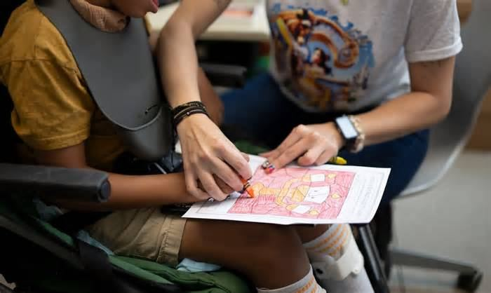

El programa de educación de Asturias que enseña "cultura española" a los niños de otros países: "Algunos no saben ni lo que es una libreta"

Hay que empezar por las partes del cuerpo. La cabeza, los hombros, las rodillas, los pies. Las palabras que uno aprende de niño se convierten, en el aula de inmersión lingüística del IES Pando de ...
Hay que empezar por las partes del cuerpo. La cabeza, los hombros, las rodillas, los pies. Las palabras que uno aprende de niño se convierten, en el aula de inmersión lingüística del IES Pando de ...
Noticia publicada por lne. Consulta el artículo original en lne para más información.